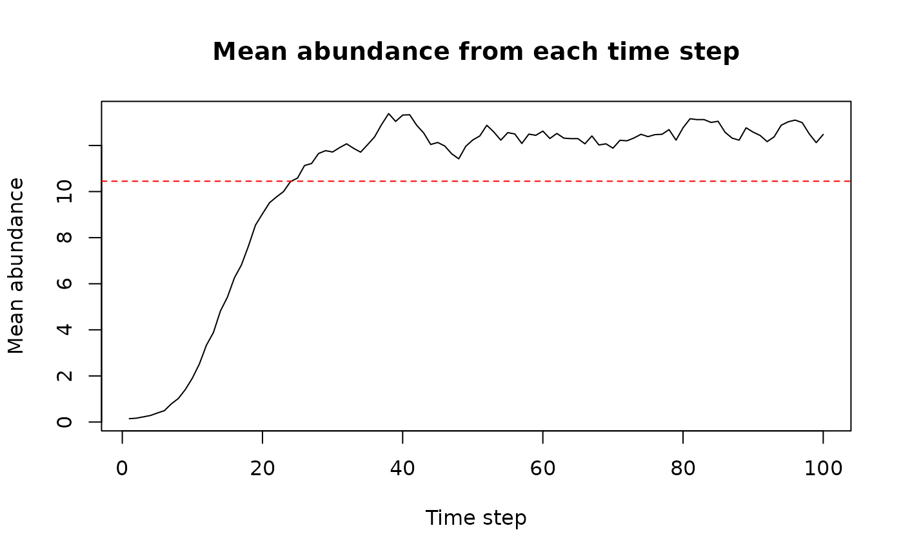
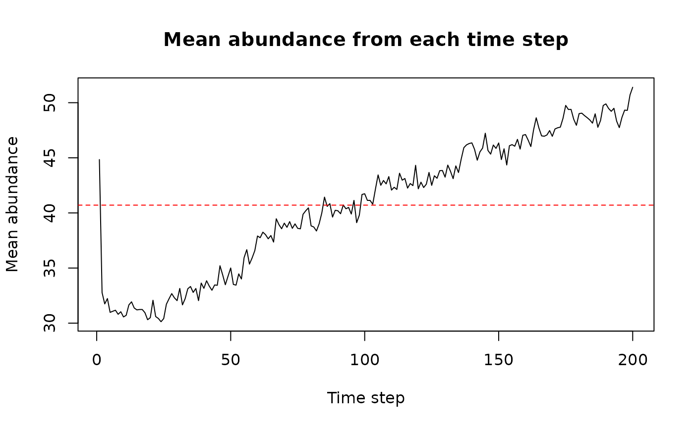

About rangr
This vignette shows an example of a basic use of the
rangr package. The main goal of this tool is to simulate
species range dynamics. The simulations can be performed in a spatially
explicit and dynamic environment, allowing for projections of how
populations will respond to e.g. climate or land use changes.
Additionally, by implementing various sampling methods and observational
error distributions, it can accurately reflect the structure of original
survey data or simulate random sampling.
Here, we showcase the full capabilities of our package, from creating a virtual species to performing simulation and visualization of results.
Basic workflow
In this chapter we will show you how to perform basic simulation using maps provided with the package.
Installing the package
First we need to install and load the rangr package.
Since the maps in which the simulation takes place have to be in the
SpatRaster format, we will also install and load the
terra package to facilitate their manipulation and
visualisation.
Input maps
One of the most important input parameters for simulation are maps specifying the abundance of the virtual species at the starting point of the simulation and carrying capacity of environment in which simulation takes place. In this section, we will not generate them from scratch. Instead, we will use maps provided with the package.
Example maps available in rangr:
n1_small.tifn1_big.tifK_small.tifK_small_changing.tifK_big.tif
You can find additional information about these data sets in help files:
?n1_small.tif
?K_small.tifWe will use these two datasets right now:
n1_small.tif- as abundance at the starting point,K_small.tif- as carrying capacity.
To read the data we can use rast function from the
terra package:
n1_small <- rast(system.file("input_maps/n1_small.tif", package = "rangr"))
K_small <- rast(system.file("input_maps/K_small.tif", package = "rangr"))Since both of these maps refer to the same virtual or in this case real environment (a small region located in northwestern Poland), they must have the same dimensions, resolution, geographical projection etc. The only differences between them may be the values they contain and the number of layers. You can use multiple layers in the carrying capacity map to create a dynamic environment during the simulation, but in this example, we will demonstrate a static environment.
Let’s take a closer look at them:
n1_small
#> class : SpatRaster
#> dimensions : 15, 10, 1 (nrow, ncol, nlyr)
#> resolution : 1000, 1000 (x, y)
#> extent : 270000, 280000, 610000, 625000 (xmin, xmax, ymin, ymax)
#> coord. ref. : ETRS89 / Poland CS92
#> source : n1_small.tif
#> name : layer
#> min value : 0
#> max value : 10
K_small
#> class : SpatRaster
#> dimensions : 15, 10, 1 (nrow, ncol, nlyr)
#> resolution : 1000, 1000 (x, y)
#> extent : 270000, 280000, 610000, 625000 (xmin, xmax, ymin, ymax)
#> coord. ref. : ETRS89 / Poland CS92
#> source : K_small.tif
#> name : layer
#> min value : 0
#> max value : 100Above, you can see the dimensions and other basic characteristics of the sample maps. The only field that differs between these maps is the value field.
Now we will use the plot function to visualise input
maps to get an even better idea of what we’re working with.
Input maps
Several things are noticeable here:
The shape is the same for both maps, and in both cases, the upper left corner of the map is excluded from the simulation area and is treated as if it were outside the map’s extent. To create such an irregular shape,
NAmust be assigned to a particular cell or group of cells.The initial population is only located in the lower right corner of the simulation area and occupies two cells. Each of them contains 10 individuals (you can use the
values()function to check).The carrying capacity map has areas that are unsuitable for the presented virtual species, as well as areas where it can have a positive population growth rate.
Initialise
Now that we have input maps, we will use the
initialise() function to set other input parameters and
generate a sim_data object that will contain all the
necessary information to perform a simulation.
The most basic initialise() call will look as
follows:
sim_data_01 <- initialise(
n1_map = n1_small,
K_map = K_small,
r = log(2),
rate = 1 / 1e3
)Let’s break down this command:
n1_mapandK_maprefer to the input maps described earlier.The
rparameter is used to set the intrinsic population growth rate. The default population growth function is the Gompetz function.The
rateparameter is related to thekernel_funparameter, which by default is set as an exponential function (rexp). Therefore,ratedetermines the shape of the dispersal function.
That way we have determined simulation environment along with demographic processes and dispersal. That’s the most basic set-up needed to perform your first simulation and we will do just that in the next step.
But before that, let’s see what other information
sim_data contains and what happened behind the scene during
initialisation.
First, let’s check the class of sim_data object:
class(sim_data_01)
#> [1] "sim_data" "list"As you can see sim_data is a sim_data
object that inherits from list objects so it is possible to
change values of this object by hand. However, we strongly encourage you
to use update() function instead to avoid errors and
problems with data integration.
To take a closer look at sim_data you can also use
print() or summary() function:
summary(sim_data_01)
#> Summary of sim_data object
#>
#> n1 map summary:
#> Min. 1st Qu. Median Mean 3rd Qu. Max. NA's
#> 0.0000 0.0000 0.0000 0.1449 0.0000 10.0000 12
#>
#> Carrying capacity map summary:
#> Min. 1st Qu. Median Mean 3rd Qu. Max. NA's
#> 0.00 0.00 56.00 44.84 72.00 100.00 12
#>
#> growth gompertz
#> r 0.693147180559945
#> A -
#> kernel_fun rexp
#> dens_dep K2N
#> border absorbing
#> max_dist 2000
#> changing_env FALSE
#> dlist TRUEIt will show the summary of both input maps, as well as list of other
most important parameters such as r that we set up
earlier.
Simulation
All you need to perform a simulation is a sim_data
object and a specified number of time steps that you want to simulate.
Additionally, you can use the burn parameter to discard a
selected number of initial time steps if it makes sense for your
research or experiment.
In this first example, we will only set the time
parameter since we want to observe how our virtual species is dispersing
and reproducing.
sim_result_01 <- sim(obj = sim_data_01, time = 100)Again we will check the class of returned object:
class(sim_result_01)
#> [1] "sim_results" "list"Similar to initialise, sim also returns an
object that inherits from list, but in this case it is
called sim_results. This list has 3 elements such as:
extinction-TRUEif population is extinct orFALSEotherwisesimulated_time- number of simulated time steps without the burn-in onesN_map- 3-dimensional array representing spatiotemporal variability in population numbers. The first two dimensions correspond to the spatial aspect of the output and the third dimension represents time.
The best way to take a closer look at the results is to call a summary function.
summary(sim_result_01)
#> Summary of sim_results object
#>
#> Simulation summary:
#>
#> simulated time 100
#> extinction FALSE
#>
#> Abundances summary:
#> Min. 1st Qu. Median Mean 3rd Qu. Max. NA's
#> 0.00 0.00 12.00 10.45 19.00 54.00 1200It gives you a quick and easy overview of the simulation results by
providing simulation time, extinction status and summary of all maps
with abundances. It also produces a plot that can be useful to determine
the value for burn parameter.
Visualisation
With rangr we provided an easy way to visualise chosen
time steps from the simulation. To do so you can use the generic plot
function:
Abundances
#> class : SpatRaster
#> dimensions : 15, 10, 4 (nrow, ncol, nlyr)
#> resolution : 1000, 1000 (x, y)
#> extent : 270000, 280000, 610000, 625000 (xmin, xmax, ymin, ymax)
#> coord. ref. : ETRS89 / Poland CS92
#> source(s) : memory
#> names : t_1, t_10, t_25, t_50
#> min values : 0, 0, 0, 0
#> max values : 10, 19, 27, 36You can also adjust its parameters to get more breaks on the colorscale:
plot(sim_result_01,
time_points = c(1, 10, 25, 50),
breaks = seq(0, max(sim_result_01$N_map + 5, na.rm = TRUE), by = 5),
template = sim_data_01$K_map
)Abundances
#> class : SpatRaster
#> dimensions : 15, 10, 4 (nrow, ncol, nlyr)
#> resolution : 1000, 1000 (x, y)
#> extent : 270000, 280000, 610000, 625000 (xmin, xmax, ymin, ymax)
#> coord. ref. : ETRS89 / Poland CS92
#> source(s) : memory
#> names : t_1, t_10, t_25, t_50
#> min values : 0, 0, 0, 0
#> max values : 10, 19, 27, 36If you prefer working on raster you can also transform any
sim_result object into SpatRaster using
to_rast() function:
# raster construction
my_rast <- to_rast(
sim_result_01,
time_points = 1:sim_result_01$simulated_time,
template = sim_data_01$K_map
)
# print raster
print(my_rast)
#> class : SpatRaster
#> dimensions : 15, 10, 100 (nrow, ncol, nlyr)
#> resolution : 1000, 1000 (x, y)
#> extent : 270000, 280000, 610000, 625000 (xmin, xmax, ymin, ymax)
#> coord. ref. : ETRS89 / Poland CS92
#> source(s) : memory
#> names : t_1, t_2, t_3, t_4, t_5, t_6, ...
#> min values : 0, 0, 0, 0, 0, 0, ...
#> max values : 10, 11, 14, 16, 20, 13, ...And then visualise it using plot() function:
Abundances
More advanced workflow
The previous workflow was pretty basic. Now we will present a more advanced one and use it to show some of the other parameters options.
Input maps
Abundances at the first time step
As we mentioned earlier, rangr has the ability to
simulate virtual species in a changing environment and in this example
we will show you how to do it. For a better illustration, we should
start from a more populated map than the previously used
n1_small. The easiest way to do this is to use abundances
from the last time step of the previous simulation as an input for the
current one. This can be done as follows:
n1_small_02 <- n1_small
values(n1_small_02) <- (sim_result_01$N_map[, , 100])Carrying capacity
To simulate changing environment we need to specify the changes that
we want. Essentially, you need to have a carrying capacity map for every
time step of the simulation. You can generate those by yourself or you
can generate maps only for a few key time steps (at least the first and
the last one) and then use K_get_interpolation() to
generate missing ones. Here we will choose the second option and use the
K_small_changing object that comes with rangr
for this purpose. Below you can see its summary:
K_small_changing <- rast(system.file("input_maps/K_small_changing.tif",
package = "rangr"))
K_small_changing
#> class : SpatRaster
#> dimensions : 15, 10, 3 (nrow, ncol, nlyr)
#> resolution : 1000, 1000 (x, y)
#> extent : 270000, 280000, 610000, 625000 (xmin, xmax, ymin, ymax)
#> coord. ref. : ETRS89 / Poland CS92
#> source : K_small_changing.tif
#> names : layer.1, layer.2, layer.3
#> min values : 0, 0, 0
#> max values : 100, 130, 170As you can see the carrying capacity increases in each map, meaning
that our environment is becoming more and more suitable for virtual
species. It is also worth noting that the first layer of
K_small_changing is the same as K_small.
Again, we can visualise all input maps using plot
function:
plot(c(n1_small_02, K_small_changing),
range = range(values(c(n1_small_02, K_small_changing)), na.rm = TRUE),
main = c("n1", paste0("K", 1:nlyr(K_small_changing))))Input maps
This raster has 3 layers so we can either perform a simulation with
only 3 time steps (which seems rather pointless) or, as mentioned, use
K_get_interpolation() function to generate maps for each
time step. In this example, we will perform 200 time steps so we will
need 200 maps.
The first and the last layers from K_small_changing are
corresponding to the first and last time steps and the middle one can be
assigned to any time step in between. Additionally, to give our virtual
species some time to adjust to the new parameters, first few carrying
capacity maps will be the same. To do so we will duplicate the first
layer of K_small_changing. Therefore, the layers and
corresponding time points will be as follows:
1st layer of
K_small_changing- 1st time step,duplicated 1st layer of
K_small_changing- 20th time step,2nd layer of
K_small_changing- 80th time step,3rd layer of
K_small_changing- 200th time step.
This translates into a stable environment during 1-20 time steps, rapidly increasing carrying capacity during 20-80 time steps and slowly rising carrying capacity during 80-200 time steps.
# duplicate 1st layer of K_small_changing
K_small_changing_altered <- c(K_small, K_small_changing)
# interpolate to generate maps for each time step
K_small_changing_interpolated <- K_get_interpolation(
K_small_changing_altered,
K_time_points = c(1, 20, 80, 200))
#> Warning in K_check(K_map, K_time_points, time): Argument "time" is no specified
#> - last number from "K_time_points" is used as "time"
K_small_changing_interpolated
#> class : SpatRaster
#> dimensions : 15, 10, 200 (nrow, ncol, nlyr)
#> resolution : 1000, 1000 (x, y)
#> extent : 270000, 280000, 610000, 625000 (xmin, xmax, ymin, ymax)
#> coord. ref. : ETRS89 / Poland CS92
#> source(s) : memory
#> names : lyr.1, lyr.2, lyr.3, lyr.4, lyr.5, lyr.6, ...
#> min values : 0, 0, 0, 0, 0, 0, ...
#> max values : 100, 100, 100, 100, 100, 100, ...
# visualise results
vis_layers <- c(1, 20, 30, seq(50, 200, by = 20), 200)
plot(subset(K_small_changing_interpolated, subset = vis_layers),
range = range(values(K_small_changing_interpolated), na.rm = TRUE),
main = paste0("K", vis_layers),
)Interpolation results
This completes preparation of input maps needed for this example. Now we will select values of other parameters.
Initialise (using update function)
First let’s look again at the sim_data object from the
previous chapter:
print(sim_data_01)
#> Class: sim_data
#>
#> n1_map:
#> Min. 1st Qu. Median Mean 3rd Qu. Max. NA's
#> 0.0000 0.0000 0.0000 0.1449 0.0000 10.0000 12
#>
#> K_map:
#> class : SpatRaster
#> dimensions : 15, 10, 1 (nrow, ncol, nlyr)
#> resolution : 1000, 1000 (x, y)
#> extent : 270000, 280000, 610000, 625000 (xmin, xmax, ymin, ymax)
#> coord. ref. : ETRS89 / Poland CS92
#> source(s) : memory
#> name : layer
#> min value : 0
#> max value : 100
#>
#> resolution 1000
#> r 0.693147180559945
#> r_sd 0
#> K_sd 0
#> growth gompertz
#> A -
#> dens_dep K2N
#> border absorbing
#> max_dist 2000
#> kernel_fun rexp
#> dlist TRUEAfter information about input maps we can see a list of parameters available to change. We will alter the following ones:
r- intrinsic growth rate,r_sd- intrinsic growth rate stochasticity,K_sd- environmental stochasticity,growth- growth function of virtual species,A- strength of Allee effect,dens_dep- what determines the possibility of settling in particular cell,border- how borders are treated.
To change these parameters (along with carrying capacity map prepared
in the previous section) we could simply initialise new
sim_data object from scratch. Here we will use
update() on sim_data from the previous example
to showcase its use.
sim_data_02 <- update(sim_data_01,
n1_map = K_small,
K_map = K_small_changing_interpolated,
K_sd = 1.1,
r = log(5),
r_sd = 0.05,
growth = "ricker",
A = 0.2,
dens_dep = "K",
border = "reprising",
rate = 1 / 500
)The growth of virtual species is now defined using the ricker
(growth = "ricker") function with increased intrinsic
growth rate (r = log(5)) combined
with weak Allee effect (A = 0.2) and added demographic
stochasticity (r_sd = 0.05). The probability of settlement
in a target cell is determined solely by its carrying capacity value
(dens_dep = "K"). We also changed the dispersal kernel’s
parameter (rate = 1/500) and the behaviour of the species
near the borders - now specimens cannot leave the specified study area
(border = "reprising").
print(sim_data_02)
#> Class: sim_data
#>
#> n1_map:
#> Min. 1st Qu. Median Mean 3rd Qu. Max. NA's
#> 0.00 0.00 56.00 44.84 72.00 100.00 12
#>
#> K_map:
#> class : SpatRaster
#> dimensions : 15, 10, 200 (nrow, ncol, nlyr)
#> resolution : 1000, 1000 (x, y)
#> extent : 270000, 280000, 610000, 625000 (xmin, xmax, ymin, ymax)
#> coord. ref. : ETRS89 / Poland CS92
#> source(s) : memory
#> names : lyr.1, lyr.2, lyr.3, lyr.4, lyr.5, lyr.6, ...
#> min values : 0.00000, 0.0000, 0.0000, 0.0000, 0.0000, 0.0000, ...
#> max values : 98.97829, 104.7768, 124.1069, 110.6544, 138.7362, 113.8916, ...
#>
#> resolution 1000
#> r 1.6094379124341
#> r_sd 0.05
#> K_sd 1.1
#> growth ricker
#> A 0.2
#> dens_dep K
#> border reprising
#> max_dist 1000
#> kernel_fun rexp
#> dlist TRUESimulation
Simulation set-up will be very similar to the previous one. We designed it that way in order to simplify the process of simulation replication. We will also now demonstrate how parallel calculations can be used when running simulations:
library(parallel)
cl <- makeCluster(detectCores() - 2)
sim_result_02 <- sim(obj = sim_data_02, time = 200, progress_bar = TRUE, cl = cl)
stopCluster(cl)
summary(sim_result_02)
#> Summary of sim_results object
#>
#> Simulation summary:
#>
#> simulated time 200
#> extinction FALSE
#>
#> Abundances summary:
#> Min. 1st Qu. Median Mean 3rd Qu. Max. NA's
#> 0.00 0.00 47.00 40.71 72.00 148.00 2400Now the behaviour of created virtual species and the world in which it lives is much more complex than before. As a result, it can better mimic real ecological scenarios that users might want to explore. In this case, we observe a decline in the mean abundance in the first few time steps of the simulation due to a change in parameters from the previous simulation. Then, we see a rapidly increasing trend to catch up to increasing carrying capacity, which slightly slows down later.
Visualisation
Let’s visualise the result of this simulation.
plot(sim_result_02,
time_points = c(1, 10, seq(20, 200, by = 20)),
breaks = seq(0, max(sim_result_02$N_map + 5, na.rm = TRUE), by = 20),
template = sim_data_02$K_map
)Abundances
#> class : SpatRaster
#> dimensions : 15, 10, 12 (nrow, ncol, nlyr)
#> resolution : 1000, 1000 (x, y)
#> extent : 270000, 280000, 610000, 625000 (xmin, xmax, ymin, ymax)
#> coord. ref. : ETRS89 / Poland CS92
#> source(s) : memory
#> names : t_1, t_10, t_20, t_40, t_60, t_80, ...
#> min values : 0, 0, 0, 0, 0, 0, ...
#> max values : 100, 72, 75, 78, 107, 114, ...